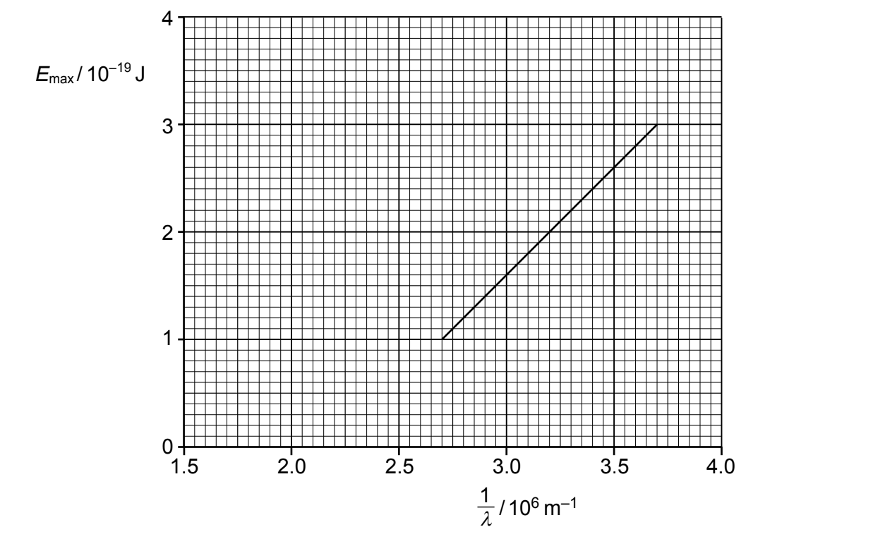
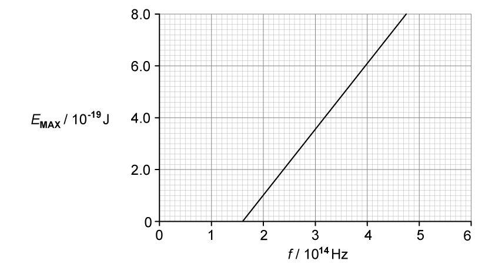
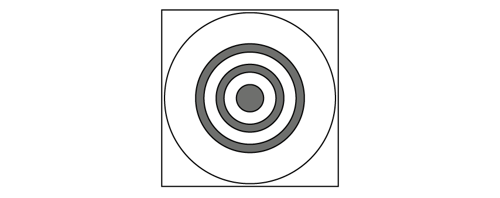
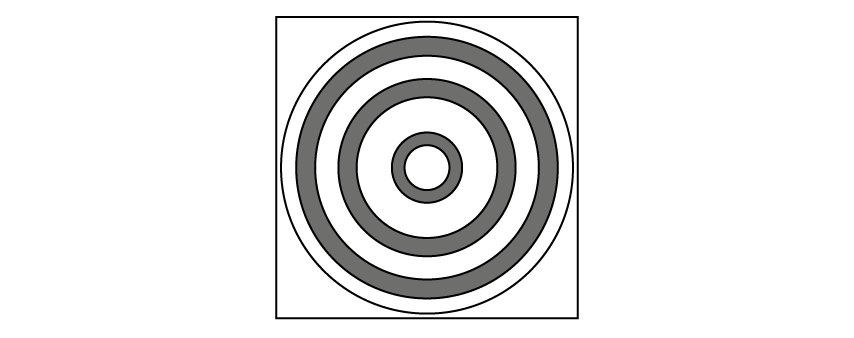
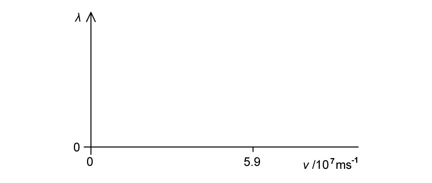
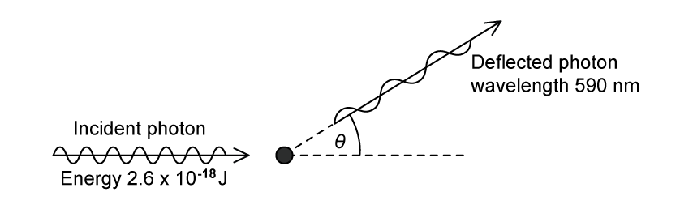
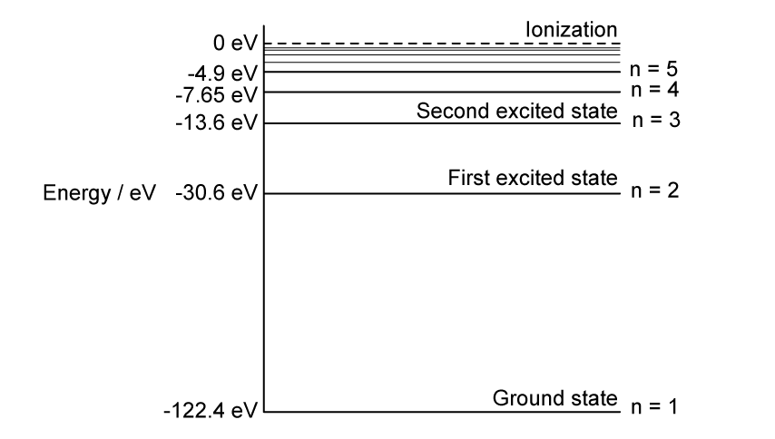
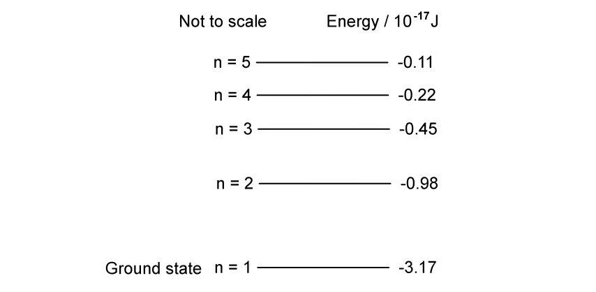
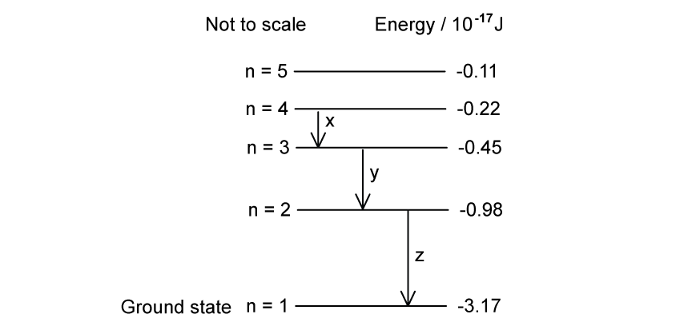
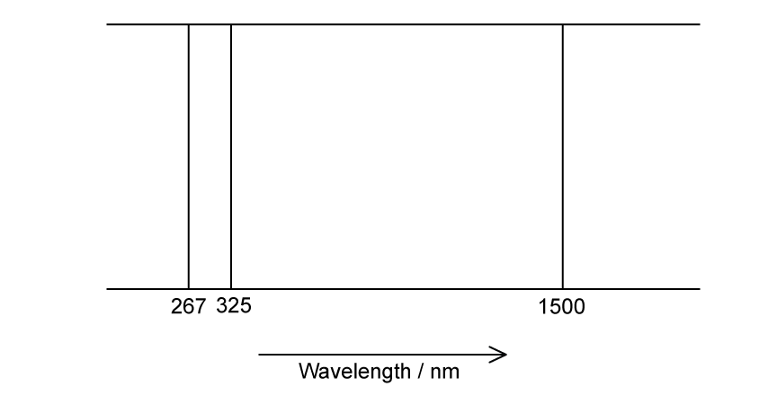

22 Quantum physics
Photons, the photoelectric effect, wave-particle duality and atomic energy levels
Learning objectives
By the end of this chapter, you should be able to:
- explain the particulate nature of electromagnetic radiation;
- use \(E=hf\), \(E=hc/\lambda\) and \(p=E/c\) for photons;
- convert between joules and electronvolts;
- explain photoelectric emission using photons and work function energy;
- use the photoelectric equation and interpret maximum-energy graphs;
- explain how frequency and intensity affect photoelectric emission;
- describe electron diffraction as evidence for matter waves;
- use the de Broglie relation \(\lambda=h/p\);
- interpret atomic energy-level diagrams and line spectra;
- use \(hf=E_1-E_2\) for transitions between discrete levels.
22.1 Energy and momentum of a photon
Photons and quantised energy
Electromagnetic radiation transfers energy in discrete packets called photons. A photon is one quantum of electromagnetic energy. Its energy depends only on frequency:
\[E=hf,\]
where \(h=6.63\times10^{-34}\ \mathrm{J\,s}\). Since \(c=f\lambda\),
\[E=\frac{hc}{\lambda}.\]
Higher-frequency, shorter-wavelength radiation therefore consists of more energetic photons. Intensity does not change the energy of each photon when the frequency is fixed; it changes the number of photons arriving per unit area per unit time.
Photon rate and intensity
If radiation of power \(P\) is monochromatic, the number of photons emitted or incident per unit time is
\[\frac{N}{t}=\frac{P}{hf}=\frac{P\lambda}{hc}.\]
For a beam spread uniformly over area \(A\), intensity is \(I=P/A\). At fixed frequency, doubling intensity doubles the photon arrival rate.
The electronvolt
One electronvolt is the energy transferred when a charge equal to the elementary charge moves through a potential difference of one volt:
\[1\ \mathrm{eV}=1.60\times10^{-19}\ \mathrm{J}.\]
To convert eV to J, multiply by \(1.60\times10^{-19}\). To convert J to eV, divide by this value. Energy-level data are often given in eV, but \(E=hf\) requires consistent SI units unless all quantities are converted carefully.
Photon momentum
A photon has zero rest mass but carries momentum:
\[p=\frac{E}{c}=\frac{hf}{c}=\frac{h}{\lambda}.\]
Absorption or reflection changes momentum and can produce radiation pressure. Momentum is a vector, so scattering problems require conservation in perpendicular directions, not just comparison of magnitudes.
22.2 Photoelectric effect
Photoelectric emission
Photoelectric emission is the release of electrons from a metal surface when electromagnetic radiation of sufficiently high frequency is incident on it. Each surface electron absorbs one photon in a one-to-one interaction.
The work function energy \(\Phi\) is the minimum energy required to remove an electron from the surface with zero kinetic energy. Different metals have different work functions.
Einstein’s photoelectric equation
Energy conservation for the most energetic emitted electron gives
\[hf=\Phi+E_{k\max} =\Phi+\frac12m_ev_{\max}^2.\]
Some electrons have less kinetic energy because they lose energy before leaving the metal. No electron can have kinetic energy greater than \(E_{k\max}\).
Threshold frequency and wavelength
At the threshold frequency \(f_0\), the emitted electron has zero maximum kinetic energy:
\[\Phi=hf_0=\frac{hc}{\lambda_0},\]
where \(\lambda_0\) is the threshold wavelength. Emission occurs for \(f\ge f_0\), equivalently \(\lambda\le\lambda_0\).
Below threshold frequency, increasing intensity cannot cause emission because no individual photon has enough energy.
Evidence against a classical wave explanation
The photon model explains observations that a simple wave-energy model cannot:
- emission is effectively instantaneous when \(f\ge f_0\);
- there is no emission below \(f_0\), regardless of intensity;
- \(E_{k\max}\) depends on frequency, not intensity;
- at fixed frequency above threshold, photoelectric current increases with intensity because more photons arrive each second.
Photoelectric graphs
From
\[E_{k\max}=hf-\Phi,\]
a graph of \(E_{k\max}\) against \(f\) is a straight line with gradient \(h\), vertical intercept \(-\Phi\) and horizontal intercept \(f_0\).
Using \(f=c/\lambda\),
\[E_{k\max}=hc\left(\frac1\lambda-\frac1{\lambda_0}\right).\]
A graph of \(E_{k\max}\) against \(1/\lambda\) has gradient \(hc\) and horizontal intercept \(1/\lambda_0\). Changing the metal changes \(\Phi\) and the intercept, but not the gradient.
22.3 Wave-particle duality
Two complementary models
The photoelectric effect demonstrates the particulate nature of electromagnetic radiation. Interference and diffraction demonstrate its wave nature. Matter also shows dual behaviour: particles have localised impacts and momentum, but moving particles can diffract and interfere.
de Broglie wavelength
The wavelength associated with a moving particle is
\[\lambda=\frac{h}{p}.\]
For a non-relativistic particle, \(p=mv\), so
\[\lambda=\frac{h}{mv}.\]
Using \(E_k=p^2/(2m)\) gives
\[\lambda=\frac{h}{\sqrt{2mE_k}}.\]
Increasing momentum or accelerating potential difference decreases wavelength. As \(v\to0\), the non-relativistic expression predicts \(\lambda\to\infty\).
Electron diffraction
Electrons accelerated through a potential difference produce diffraction rings after passing through a thin crystalline target. The regular atomic planes act like a diffraction grating because their spacing is comparable to the electron de Broglie wavelength.
The diffraction pattern is evidence that electrons have wave properties. A lower accelerating p.d. gives lower momentum, a longer wavelength and wider diffraction-ring spacing.
22.4 Energy levels in atoms and line spectra
Discrete energy levels
Electrons in isolated atoms can occupy only certain discrete energy levels. The lowest is the ground state; higher allowed levels are excited states. The ionisation level is conventionally assigned zero energy, so bound-state energies are negative.
An electron cannot remain between permitted levels. Excitation requires exactly the energy difference between two levels when a photon is absorbed.
Photon emission and absorption
For a transition between levels \(E_1\) and \(E_2\),
\[\Delta E=|E_1-E_2|=hf=\frac{hc}{\lambda}.\]
- Downward transition: a photon is emitted.
- Upward transition: a photon of exactly the required energy is absorbed.
- Photon energy greater than the ionisation energy: the electron is freed and the excess becomes kinetic energy.
Line spectra
Each allowed energy difference produces one discrete photon frequency and wavelength. A hot, low-pressure gas produces bright emission lines when excited electrons fall to lower levels. A continuous spectrum passing through a cooler gas produces dark absorption lines when photons matching upward transitions are removed.
Because each element has a unique set of energy levels, its line spectrum acts as a fingerprint. The largest energy gap produces the highest frequency and shortest wavelength.
Structured Questions
22.1 The Photoelectric Effect — Medium
Example 1 · Photoelectric evidence and a reciprocal-wavelength graph · 22.1 SQ Medium Q1
(a) Describe two phenomena associated with the photoelectric effect that cannot be explained using a wave theory of light. [2 marks]
(b) The maximum energy \(E_{\max}\) of electrons emitted from a metal surface when illuminated by light of wavelength \(\lambda\) is given by the expression
\[E_{\max}=hc\left(\frac{1}{\lambda}-\frac{1}{\lambda_0}\right)\]
where \(h\) is the Planck constant and \(c\) is the speed of light.
(i) Identify the symbol \(\lambda_0\). [1]
(ii) The variation with \(1/\lambda\) of \(E_{\max}\) for the metal surface is shown in Fig. 8.1.

Use Fig. 8.1 to determine the magnitude of \(\lambda_0\). [1]
(iii) Use the gradient of Fig. 8.1 to determine a value for the Planck constant \(h\). Show your working. [3]
[5 marks]
(c) The metal surface in (b) becomes oxidised.
Photoelectric emission is still observed but the work function energy is increased.
On Fig. 8.1, draw a line to show the variation with \(1/\lambda\) of \(E_{\max}\) for the oxidised surface. [2 marks]
Show mark scheme / model answer
- (a) Any two: no emission below the threshold frequency; maximum electron energy depends on incident frequency; maximum electron energy does not depend on intensity; emission is instantaneous.
[2] - (b)(i) \(\lambda_0\) is the threshold wavelength, the maximum incident wavelength that causes photoelectric emission.
[1] - (b)(ii) Extrapolation gives \(1/\lambda_0\approx2.2\times10^6\ \mathrm{m^{-1}}\), so \(\lambda_0\approx4.5\times10^{-7}\ \mathrm{m}\).
[1] - (b)(iii) Gradient \(=hc\). Using \((3.7\times10^6,3.0\times10^{-19})\) and \((2.7\times10^6,1.0\times10^{-19})\) gives a gradient of \(2.0\times10^{-25}\ \mathrm{J\,m}\).
[2]Hence \(h=(2.0\times10^{-25})/(3.00\times10^8)=6.7\times10^{-34}\ \mathrm{J\,s}\).[1] - (c) Draw a straight line with the same positive gradient
[1], but with its extrapolated \(1/\lambda\) intercept greater than \(2.2\times10^6\ \mathrm{m^{-1}}\).[1]
Example 2 · Photon definition and maximum-energy graph · 22.1 SQ Medium Q2
(a) State what is meant by a photon. [2 marks]
(b) Electromagnetic radiation of a varying frequency \(f\) and constant intensity \(I\) is used to illuminate a metal surface. At certain frequencies, electrons are emitted from the surface of the metal.
(i) State the name of this phenomenon. [1]
(ii) The variation with \(f\) of the maximum kinetic energy \(E_{\mathrm{MAX}}\) of the emitted electrons is shown in Fig. 1.1.

Describe four conclusions that can be drawn from the graph in Fig. 1.1. The conclusions may be qualitative or quantitative. [4]
[5 marks]
(c) The experiment in (b) is carried out twice more. Each time one change is made to the method used.
State, and explain, how the graph obtained would compare with Fig. 1.1 when:
(i) the same metal is used, but with electromagnetic radiation of intensity \(\frac12I\); [2]
(ii) a different metal is used, but the intensity \(I\) of the radiation is the same. [2]
[4 marks]
Show mark scheme / model answer
- (a) A photon is a quantum or packet of energy
[1]of electromagnetic radiation.[1] - (b)(i) The photoelectric effect.
[1] - (b)(ii) The threshold frequency is approximately \(1.6\times10^{14}\ \mathrm{Hz}\).
[1]The gradient is Planck’s constant, approximately \(6.7\times10^{-34}\ \mathrm{J\,s}\).[1]The work function is approximately \(1.06\times10^{-19}\ \mathrm{J}\).[1]\(E_{\mathrm{MAX}}\) increases linearly with frequency.[1] - (c)(i) The line is unchanged
[1]because halving intensity changes photon rate, not the energy \(hf\) of each photon or the maximum electron kinetic energy.[1] - (c)(ii) The line has the same gradient but a different frequency-axis intercept
[1]because a different metal has a different work function and threshold frequency.[1]
Example 3 · Work function, photon rate and changing frequency · 22.1 SQ Medium Q3
(a) State what is meant by the work function energy of a metal. [2 marks]
(b) Ultraviolet radiation of frequency \(8.5\times10^{14}\ \mathrm{Hz}\) is incident, in a vacuum, on a metal surface. The power of the radiation incident on the surface is \(9.45\ \mathrm{mW}\). Photoelectrons are emitted with a maximum kinetic energy of \(2.1\times10^{-19}\ \mathrm{J}\).
Determine the number of photons incident on the surface per unit time.
\[\text{number per unit time}=\ ........................................\ \mathrm{s^{-1}}\]
[2 marks]
(c) Calculate the work function energy \(\Phi\) of the metal.
\[\Phi=\ ........................................\ \mathrm{J}\]
[2 marks]
(d) The frequency of the radiation incident on the surface in (b) is decreased while the power remains constant.
State and explain the effect of this change on:
(i) the maximum kinetic energy of the photoelectron; [2]
(ii) the rate of emission of the photoelectron. [1]
[3 marks]
Show mark scheme / model answer
- (a) The work function is the minimum photon energy required to remove an electron
[1]from the metal surface with zero kinetic energy.[1] - (b) One photon has energy \(hf=(6.63\times10^{-34})(8.5\times10^{14})=5.64\times10^{-19}\ \mathrm{J}\).
[1]Photon rate \(=P/(hf)=(9.45\times10^{-3})/(5.64\times10^{-19})=1.68\times10^{16}\ \mathrm{s^{-1}}\).[1] - (c) \(hf=\Phi+E_{k\max}\), so \(\Phi=5.64\times10^{-19}-2.1\times10^{-19}=3.54\times10^{-19}\ \mathrm{J}\).
[2] - (d)(i) Photon energy decreases for the same work function
[1], so maximum photoelectron kinetic energy decreases.[1] - (d)(ii) At constant power, lower energy per photon means more photons per unit time, so the emission rate increases, provided the frequency remains above threshold.
[1]
22.2 Wave-Particle Duality — Medium
Example 4 · Electron diffraction and accelerating potential difference · 22.2 SQ Medium Q1
(a) State the formula for the de Broglie wavelength \(\lambda\) of a moving particle.
State the meaning of any other symbol used. [2 marks]
(b) Electrons accelerate through a potential difference, pass through a thin crystal and are then incident on a fluorescent screen.
The pattern in Fig. 1.1 is observed on the fluorescent screen.

(i) State the name of the phenomenon shown by the electrons at the crystal. [1]
(ii) State what this phenomenon shows about the nature of electrons. [1]
(iii) Suggest why the thin crystal causes the phenomenon in (b)(i). [1]
[3 marks]
(c) The potential difference used to accelerate the electron is changed.
The new pattern observed on the screen is shown in Fig. 1.2.

State and explain the change that has been made to the potential difference to create the pattern shown in Fig. 1.2. [2 marks]
Show mark scheme / model answer
- (a) \(\lambda=h/p\)
[1], where \(h\) is the Planck constant and \(p\) is particle momentum.[1]Equivalently, \(\lambda=h/(mv)\) with \(m\) as mass and \(v\) as velocity. - (b)(i) Electron diffraction.
[1] - (b)(ii) Moving electrons have wave properties.
[1] - (b)(iii) The spacing between atoms or atomic planes is comparable with the electron wavelength.
[1] - (c) The accelerating p.d. is decreased.
[1]The electrons have lower momentum and therefore a longer de Broglie wavelength, producing greater diffraction-ring spacing.[1]
Example 5 · Evidence for duality and an alpha-particle wavelength · 22.2 SQ Medium Q2
(a) State one piece of experimental evidence for:
(i) the wave nature of matter; [1]
(ii) the particulate nature of electromagnetic radiation. [1]
[2 marks]
(b) Calculate the de Broglie wavelength \(\lambda\) of an alpha-particle moving at a speed of \(5.9\times10^7\ \mathrm{m\,s^{-1}}\).
\[\lambda=\ ........................................\ \mathrm{m}\]
[3 marks]
(c) The speed \(v\) of the alpha-particles in (b)(i) is gradually reduced to zero.
On Fig. 1.1, sketch the variation with \(v\) of \(\lambda\).

[2 marks]
Show mark scheme / model answer
- (a)(i) Electron diffraction.
[1] - (a)(ii) The photoelectric effect.
[1] - (b) \(m_\alpha=4u=4(1.66\times10^{-27})=6.64\times10^{-27}\ \mathrm{kg}\). Momentum \(p=mv=(6.64\times10^{-27})(5.9\times10^7)=3.92\times10^{-19}\ \mathrm{N\,s}\).
[1]Use \(\lambda=h/p\).[1]Hence \(\lambda=(6.63\times10^{-34})/(3.92\times10^{-19})=1.69\times10^{-15}\ \mathrm{m}\).[1] - (c) Draw a decreasing reciprocal curve with negative gradient throughout.
[1]It does not touch either axis: \(\lambda\) remains positive at \(5.9\times10^7\ \mathrm{m\,s^{-1}}\) and tends to infinity as \(v\to0\).[1]
Example 6 · Photon scattering from an electron · 22.2 SQ Medium Q3
(a) Explain what is meant by the de Broglie wavelength. [1 mark]
(b) A gamma-ray photon of energy \(2.6\times10^{-18}\ \mathrm{J}\) is incident on an isolated stationary electron, as illustrated in Fig. 1.1.

The photon is deflected elastically by the electron through angle \(\theta\). The deflected photon has a wavelength of \(590\ \mathrm{nm}\).
(i) On Fig. 1.1, draw an arrow to indicate a possible initial direction of motion of the electron after the photon has been deflected. [1]
(ii) Calculate the energy of the deflected photon.
\[\text{photon energy}=\ ........................................\ \mathrm{J}\]
[2]
[3 marks]
(c) Calculate the speed of the electron after the photon has been deflected.
\[\text{speed}=\ ........................................\ \mathrm{m\,s^{-1}}\]
[3 marks]
(d) Explain why the magnitude of the final momentum of the electron is not equal to the change in magnitude of the momentum of the photon. [2 marks]
Show mark scheme / model answer
- (a) The de Broglie wavelength is the wavelength associated with a moving particle.
[1] - (b)(i) Draw the electron arrow below the original horizontal photon direction and pointing to the right, so its vertical momentum balances that of the deflected photon.
[1] - (b)(ii) \(E=hc/\lambda=(6.63\times10^{-34})(3.00\times10^8)/(590\times10^{-9})=3.37\times10^{-19}\ \mathrm{J}\).
[2] - (c) Energy transferred to the electron is \(2.6\times10^{-18}-3.37\times10^{-19}=2.26\times10^{-18}\ \mathrm{J}\).
[1]Using \(E_k=\frac12m_ev^2\)[1]gives \(v=\sqrt{2E_k/m_e}=2.23\times10^6\ \mathrm{m\,s^{-1}}\).[1] - (d) Momentum is a vector quantity
[1], so conservation must be applied to horizontal and vertical components; changes in direction mean that magnitudes alone cannot be subtracted.[1]
22.3 Quantisation of Energy — Medium
Example 7 · Hydrogen transitions and emitted wavelengths · 22.3 SQ Medium Q1
(a) The energy levels of a hydrogen atom are shown in Fig. 1.1.

Calculate the wavelength of radiation emitted when an electron falls from level \(n=4\) to the ground state in the hydrogen atom. [4 marks]
(b) When an electron of energy \(1.84\times10^{-17}\ \mathrm{J}\) collides with a hydrogen atom, photons of six different energies are emitted.
Sketch arrows on Fig. 1.1 to show the transitions responsible for these photons. [3 marks]
(c) Calculate the wavelength of the photon with the smallest energy. Give your answer to an appropriate number of significant figures. [3 marks]
(d) One way to excite a hydrogen atom is by the absorption of a photon.
Explain why, for a particular transition, the photon must have an exact amount of energy. [2 marks]
Show mark scheme / model answer
- (a) \(\Delta E=(-7.65)-(-122.4)=114.75\ \mathrm{eV}=1.84\times10^{-17}\ \mathrm{J}\).
[1]\(f=\Delta E/h=2.78\times10^{16}\ \mathrm{Hz}\).[1]Use \(c=f\lambda\).[1]Hence \(\lambda=3.00\times10^8/(2.78\times10^{16})=1.08\times10^{-8}\ \mathrm{m}\).[1] - (b) Draw all six downward transitions among levels 1 to 4: \(4\to3\), \(4\to2\), \(4\to1\)
[1]; \(3\to2\), \(3\to1\)[1]; and \(2\to1\).[1] - (c) The smallest gap is \(4\to3\): \(\Delta E=(-7.65)-(-13.6)=5.95\ \mathrm{eV}=9.53\times10^{-19}\ \mathrm{J}\).
[1]Use \(\lambda=hc/\Delta E\).[1]\(\lambda=2.09\times10^{-7}\ \mathrm{m}\) to 3 s.f.[1] - (d) Energy levels are discrete and excitation requires an exact energy difference.
[1]A photon is absorbed in a one-to-one interaction, so all its energy must equal that level difference.[1]
Example 8 · Energy-level transitions, spectral regions and ionisation · 22.3 SQ Medium Q2
(a) The lowest energy levels of a hydrogen atom are represented in Fig. 1.1.

Identify the transition that produces a photon with frequency of \(3.3\times10^{16}\ \mathrm{Hz}\). [2 marks]
(b) An excited hydrogen atom can emit photons of certain discrete frequencies in various regions of the electromagnetic spectrum. Three possible transitions are shown in Fig. 1.2.

Identify the transitions in Fig. 1.2 which produce a photon in the following regions of the electromagnetic spectrum:
(i) Ultraviolet [1]
(ii) Visible [1]
(iii) Infrared [1]
[3 marks]
(c) Explain why the emitted photons in part (b) have certain discrete frequencies. [3 marks]
(d) An electron in the hydrogen atom is ionised by a photon of light with frequency \(5.2\times10^{16}\ \mathrm{Hz}\).
Calculate the kinetic energy of the ionised electron.
\[\text{kinetic energy}=\ ........................................\ \mathrm{J}\]
[3 marks]
Show mark scheme / model answer
- (a) Photon energy \(hf=(6.63\times10^{-34})(3.3\times10^{16})=2.19\times10^{-17}\ \mathrm{J}\).
[1]This equals \((-0.98-(-3.17))\times10^{-17}\ \mathrm{J}\), so the transition is \(n=2\to n=1\).[1] - (b)(i) Ultraviolet: transition z.
[1] - (b)(ii) Visible: transition y.
[1] - (b)(iii) Infrared: transition x.
[1] - (c) An electron moves from one fixed energy level to a lower fixed level.
[1]The photon therefore receives a discrete energy equal to the level difference.[1]Since \(\Delta E=hf\), discrete energies produce discrete frequencies.[1] - (d) Ionisation energy from the ground state is \(3.17\times10^{-17}\ \mathrm{J}\).
[1]Photon energy is \(hf=(6.63\times10^{-34})(5.2\times10^{16})=3.44\times10^{-17}\ \mathrm{J}\).[1]Hence \(E_k=3.44\times10^{-17}-3.17\times10^{-17}=2.7\times10^{-18}\ \mathrm{J}\).[1]
Example 9 · Three-level wavelength relation and an emission spectrum · 22.3 SQ Medium Q3
(a) Transitions between three energy levels in a particular atom give rise to three spectral lines.
In decreasing magnitudes, these are related to the wavelengths, \(\lambda_1\), \(\lambda_2\), and \(\lambda_3\).
Use a diagram to show that the equation that relates \(\lambda_1\), \(\lambda_2\), and \(\lambda_3\) is:
\[\frac{1}{\lambda_1}=\frac{1}{\lambda_2}+\frac{1}{\lambda_3}\]
[5 marks]
(b) An atom has a ground state energy of \(-8.80\ \mathrm{eV}\). The complete line emission spectra for this atom is shown in Fig. 1.1.

Sketch a diagram of the possible energy levels for the atomic line spectra shown in Fig. 1.1. Label each energy level with the value of its energy. [6 marks]
Show mark scheme / model answer
- (a) Draw three energy levels with the upper gap smaller than the total lower-to-upper gap.
[1]Show the three possible downward transitions and label the largest-energy transition \(\lambda_1\), with the other two \(\lambda_2\) and \(\lambda_3\).[2]Energy conservation gives \(E_1=E_2+E_3\).[1]Substituting \(E=hc/\lambda\) and cancelling \(hc\) gives \(1/\lambda_1=1/\lambda_2+1/\lambda_3\).[1] - (b) For \(1500\ \mathrm{nm}\), \(E=hc/\lambda=1.33\times10^{-19}\ \mathrm{J}=0.83\ \mathrm{eV}\).
[1]Hence the first excited level is \(-8.80+0.83=-7.97\ \mathrm{eV}\).[1] - For \(325\ \mathrm{nm}\), the transition energy is \(3.83\ \mathrm{eV}\).
[1]Hence the next level is \(-7.97+3.83=-4.14\ \mathrm{eV}\).[1] - For \(267\ \mathrm{nm}\), the transition energy is \(4.66\ \mathrm{eV}\), consistent with \(-8.80+4.66=-4.14\ \mathrm{eV}\).
[1] - Draw and label three horizontal levels at \(-8.80\ \mathrm{eV}\), \(-7.97\ \mathrm{eV}\) and \(-4.14\ \mathrm{eV}\), with the three corresponding transitions.
[1]